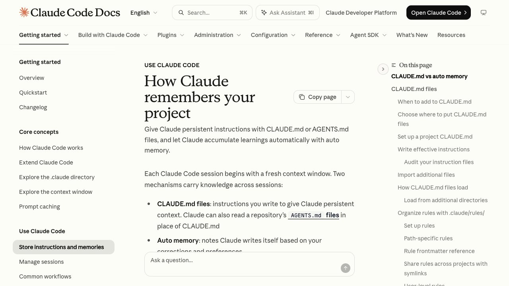

Qué es CLAUDE.md
Cada sesión de Claude Code empieza con la memoria en blanco. CLAUDE.md es un archivo de texto normal en el que escribes lo que Claude debe saber siempre: cómo se prueba tu proyecto, qué convenciones sigues, dónde está cada cosa. Claude lo lee al empezar cada sesión, así no tienes que repetirlo. La documentación oficial lo resume así: escribe ahí lo que, si no, tendrías que explicar de nuevo.
Además existe la memoria automática: notas que Claude escribe él solo a partir de tus correcciones. CLAUDE.md lo escribes tú; la memoria automática la escribe Claude. Las dos se cargan en cada conversación.
Dónde guardarlo
~/.claude/CLAUDE.mdTus preferencias personales para todos los proyectos../CLAUDE.mdInstrucciones del proyecto; se comparten con tu equipo por control de versiones (también vale ./.claude/CLAUDE.md)../CLAUDE.local.mdPreferencias tuyas solo para este proyecto; añádelo a .gitignore.El archivo de organización (para empresas) lo gestiona el equipo de IT. Para empezar, te bastan los tres de arriba: el personal, el del proyecto y el local.
Créalo con /init
Abre Claude Code en la carpeta de tu proyecto y escribe este comando. Claude analiza tu código y genera un CLAUDE.md inicial con los comandos de compilación, de pruebas y las convenciones que descubra. Si ya existe uno, te propone mejoras en vez de sobrescribirlo.
/initDespués retócalo a mano añadiendo lo que Claude no puede adivinar por sí mismo. ¿No tienes Claude Code todavía? Mira cómo instalarlo.
Cómo escribirlo para que Claude le haga caso
Claude trata CLAUDE.md como contexto, no como una orden obligatoria: cuanto más concreto y corto, más lo cumple. Tres reglas de la documentación oficial:
- Concreto y comprobable. «Usa 2 espacios de indentación» mejor que «formatea bien el código». «Ejecuta
npm testantes de hacer commit» mejor que «prueba tus cambios». - Corto. Apunta a menos de 200 líneas por archivo. Los archivos largos gastan más contexto y se obedecen peor.
- Sin contradicciones. Si dos instrucciones chocan, Claude puede elegir una al azar. Revisa de vez en cuando y borra lo viejo.
Un ejemplo mínimo que puedes copiar y adaptar:
# Proyecto
- Instala con `npm install` y prueba con `npm test`.
- Usa 2 espacios de indentación.
- Los manejadores de la API viven en `src/api/handlers/`.
- Antes de hacer commit, ejecuta `npm test`.Cuándo añadir algo
- Claude comete el mismo error por segunda vez.
- Escribes en el chat la misma aclaración que la sesión anterior.
- Un compañero nuevo necesitaría ese mismo dato para trabajar.
Si algo es un procedimiento de varios pasos o solo importa en una parte del código, la documentación recomienda sacarlo de CLAUDE.md y ponerlo en una skill o en una regla por carpeta.
Comandos útiles
/initGenera un CLAUDE.md inicial./memoryRevisa y edita tu memoria./doctor prompt-auditClaude revisa tus archivos de instrucciones: contradicciones, referencias a archivos que ya no existen. No cambia nada hasta que se lo pidas (versión 2.1.283 o posterior).Más en comandos de Claude Code.
Lo que no hace
CLAUDE.md no obliga: es una guía que Claude suele seguir, no una barrera. Si necesitas bloquear una acción pase lo que pase (por ejemplo, que nunca toque ciertos archivos), la documentación oficial indica usar un hook y no una instrucción escrita. Para eso, mira permisos de un agente de IA.
Esta guía forma parte de Claude Code en español: todas las guías, en orden.
Cómo se cargan cuando hay varios
Si abres Claude Code en una subcarpeta, por ejemplo proyecto/web/, lee el CLAUDE.md de esa carpeta y también los de todas las carpetas de encima: proyecto/web/CLAUDE.md, proyecto/CLAUDE.md y los CLAUDE.local.md que haya al lado. No se sustituyen entre ellos: se juntan, de la carpeta más alta a la más baja. Por eso lo general va arriba y lo particular, abajo.
Los CLAUDE.md que estén en carpetas por debajo de donde lo abriste no se leen al empezar. Se cargan la primera vez que Claude lee o toca un archivo de esa carpeta. Así, en un proyecto grande, las instrucciones del backend no ocupan sitio mientras trabajas en el frontend.
Un truco que poca gente conoce: los comentarios HTML (<!-- nota para el equipo -->) se borran antes de pasárselos a Claude. Puedes dejar notas para las personas sin gastar contexto.
Importar otros archivos con @
No hace falta copiar el README dentro de CLAUDE.md. Basta con mencionarlo con una arroba y Claude lo carga junto al resto:
Mira @README para la visión general y @package.json para los comandos de npm.Reglas de las importaciones, según la documentación oficial:
- La ruta es relativa al archivo que importa, no a la carpeta donde abriste Claude.
- Un archivo importado puede importar otros, con un máximo de cuatro saltos.
- Si la ruta tiene espacios, pon una barra invertida delante de cada uno:
@Design\ Docs/api.md. Si la pones entre comillas, no se importa. - Si quieres escribir una ruta sin importarla, ponla entre comillas invertidas: `
Ojo: importar no ahorra nada. El archivo importado se carga entero en cada sesión, igual que si lo hubieras pegado.
Reglas por tema y por carpeta (.claude/rules)
Cuando CLAUDE.md empieza a crecer, puedes partirlo en archivos pequeños dentro de .claude/rules/, uno por tema:
tu-proyecto/
├── .claude/
│ ├── CLAUDE.md
│ └── rules/
│ ├── estilo.md
│ ├── tests.md
│ └── seguridad.mdLas reglas sin nada más se cargan siempre, como CLAUDE.md. Lo interesante es limitarlas a ciertos archivos con una cabecera paths. Esta regla solo entra cuando Claude trabaja con archivos de la API:
---
paths:
- "src/api/**/*.ts"
---
- Todas las rutas de la API validan la entrada con zod.
- Los errores devuelven { error, code }, nunca texto suelto.paths es el único campo que lee Claude Code en una regla; cualquier otro se ignora sin avisar. Y si la cabecera tiene un error de formato, la regla se carga siempre, como si no tuviera paths. Para ver el error, arranca con claude --debug.
CLAUDE.md y AGENTS.md
AGENTS.md es el archivo de instrucciones que usan otras herramientas de programación con IA. Desde la versión 2.1.277, Claude Code también lo lee, con esta regla:
| Tu proyecto tiene | Claude lee |
|---|---|
| Solo AGENTS.md | AGENTS.md |
| AGENTS.md y un CLAUDE.md (o CLAUDE.local.md) en la carpeta o encima | Solo los CLAUDE.md |
| Un CLAUDE.md que importa AGENTS.md | Los dos, porque CLAUDE.md lo incluye |
Si usas varias herramientas y quieres un solo archivo, deja las instrucciones en AGENTS.md y crea un CLAUDE.md con una sola línea:
@AGENTS.mdPuedes cambiar este comportamiento en /config, en el ajuste Project instructions. Para saber si Claude ha leído tu AGENTS.md, ejecuta /memory y busca su ruta en la lista.
La memoria automática, por dentro
Además de lo que escribes tú, Claude guarda sus propias notas mientras trabaja. Son de cuatro tipos:
- user: tu papel, lo que sabes y cómo te gusta trabajar.
- feedback: las correcciones que le haces y lo que le confirmas que hizo bien.
- project: trabajo en curso, plazos y decisiones que no se deducen del código.
- reference: dónde encontrar cosas de fuera del proyecto, como un tablero de tareas.
No apunta lo que puede leer en el código ni lo que ya dice tu CLAUDE.md, y no guarda algo en cada sesión: solo lo que cree que le servirá más adelante. Cuando lo hace, verás mensajes como «Saved 2 memories».
Las notas viven en ~/.claude/projects/<proyecto>/memory/. El índice, MEMORY.md, se carga al empezar cada conversación, pero solo las primeras 200 líneas o los primeros 25 KB. Las notas largas van en archivos aparte que Claude lee solo cuando las necesita. Todo es texto normal: con /memory puedes abrirlo, corregirlo o borrarlo. Si guardó algo que no es verdad, bórralo; si no, lo seguirá teniendo en cuenta.
Cuando no hace caso a tu CLAUDE.md
Claude recibe CLAUDE.md como un mensaje al principio de la conversación, no como una norma del sistema. Si no lo sigue, revisa esto por orden:
- Ejecuta
/contexty mira la lista Memory files. Si tu archivo no aparece, Claude no lo está viendo: comprueba que está en una de las rutas que se cargan. - Si el archivo está en una subcarpeta, recuerda que solo se carga cuando Claude toca un archivo de esa carpeta.
- Haz la instrucción más concreta. «Usa 2 espacios» funciona; «formatea bien» no.
- Busca contradicciones entre tus archivos: el personal, el del proyecto y las reglas.
- Si la instrucción es sobre commits o pull requests, puede chocar con las instrucciones de git que trae Claude Code. La documentación explica cómo desactivarlas con el ajuste
includeGitInstructions. - Si algo tiene que pasar siempre (antes de cada commit, después de cada edición), no lo escribas en CLAUDE.md: hazlo con un hook, que se ejecuta sí o sí.
Un ejemplo más completo
Este es un CLAUDE.md realista para una web pequeña. Tiene 15 líneas y responde a lo que Claude preguntaría el primer día:
# Tienda web
## Comandos
- Arrancar en local: `npm run dev` (puerto 3000)
- Tests: `npm test`; uno solo: `npm test -- carrito`
- Antes de hacer commit: `npm run lint && npm test`
## Convenciones
- TypeScript estricto; nada de `any`.
- Los componentes van en `src/components/`, uno por archivo.
- Los textos de la web están en español de España y se tratan de tú.
## Cuidado
- No toques `src/pagos/` sin preguntar: está conectado a la pasarela real.
- La base de datos de pruebas se reinicia con `npm run db:reset`.Fíjate en lo que no lleva: nada de «escribe buen código» ni explicaciones largas. Cada línea es algo concreto que Claude no podría adivinar leyendo el proyecto.
Preguntas frecuentes
¿Qué es CLAUDE.md?
Un archivo de texto con instrucciones que Claude Code lee al empezar cada sesión: comandos del proyecto, convenciones y reglas que no quieres repetir.
¿Cómo creo un CLAUDE.md?
Abre Claude Code en tu proyecto y escribe /init. Claude analiza el código y genera un archivo inicial que luego puedes retocar.
¿Dónde se guarda CLAUDE.md?
En ./CLAUDE.md o ./.claude/CLAUDE.md para el proyecto, en ~/.claude/CLAUDE.md para tus preferencias en todos los proyectos y en ./CLAUDE.local.md para lo tuyo solo en este proyecto.
¿Qué longitud debe tener?
La documentación oficial recomienda menos de 200 líneas por archivo. Los muy largos consumen más contexto y se siguen peor.
¿Claude siempre obedece CLAUDE.md?
No siempre. Lo trata como contexto, no como una norma obligatoria. Para bloquear una acción con seguridad hay que usar un hook.